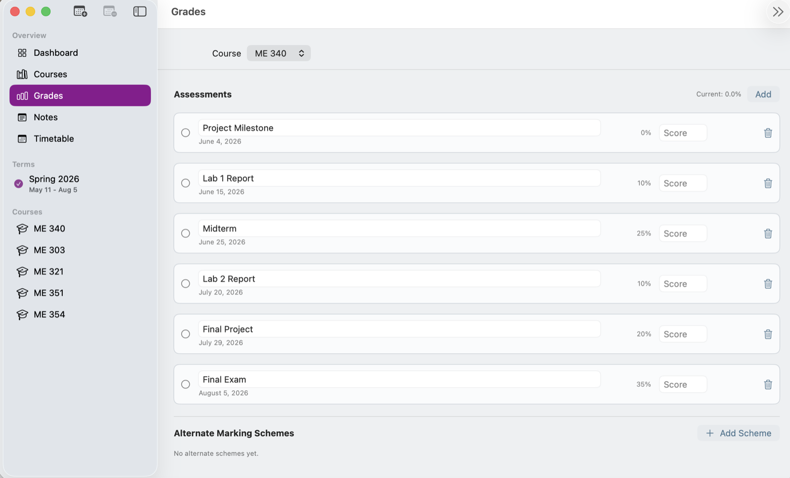
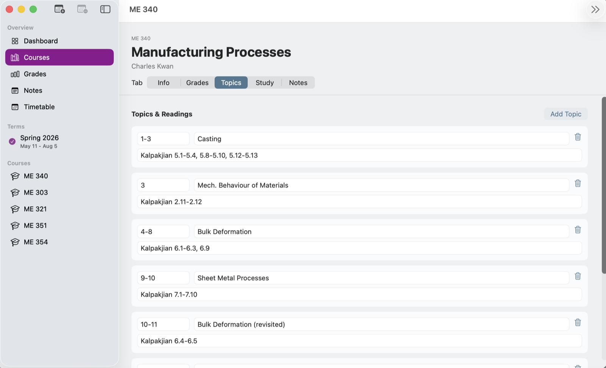

Download TermTracker
The current build is available as a direct macOS `.zip` download.
TermTracker is a desktop app built around the way a real university term actually works. Instead of scattering deadlines, grades, notes, topics, and planning across several tools, it brings them into one native macOS workspace designed for course-heavy schedules.
The app is structured around the rhythm of an academic term: dashboard views, course pages, weighted assessments, topic tracking, notes, and timetable context. The goal is less friction and better visibility when the workload starts stacking up.
The current build is available as a direct macOS `.zip` download.
The strongest part of the app is that it is specific. It is not a generic task manager with classes renamed as projects. It is designed around how a term unfolds: multiple courses, weighted assessments, grace-day limits, lecture topics, readings, and the need to understand where effort is building before things get messy.
That makes the interface calmer because the structure is already doing part of the thinking for the user. The app keeps course context visible while still making deadlines and grades easy to review at a glance.


Most academic organization tools are either too broad or too mobile-first. This project pushes in the other direction: a native desktop tool that assumes the user is actively managing a full term, comparing course weightings, checking deadlines, and working with more detail than a simple to-do list can hold cleanly.
Go back to the homepage to see how the app sits alongside the rest of the portfolio.
Open macOS apps section